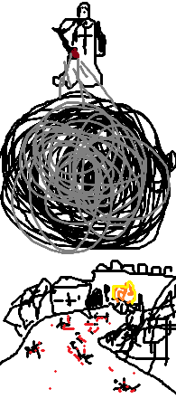
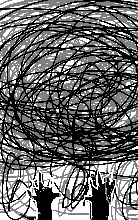

Vous attendez que tous les démons soient devant le roi, pour pouvoir rentrer.
Une fois rentré vous réfléchissez à comment vous allez pouvoir tous les tuer.
Vous avancez vers la voie principale mais restez caché.
Vous voyez tous ces démons attendre le discours du roi.
Vous apercevez qu'à part cette rue et la voie principale, il n'y a aucune autre issue.
donc si vous bloquez la voie principale et que vous attendez dans cette ruelle vous allez pouvoir tous les tuer.
Vous revenez sur vos pas et cherchez quelque chose pour bloquer la voie principale.
Vous ne voyez pas grand chose qui puisse bloquer la voie.
Vous continuez à chercher puis vous trouvez un magasin d'huile.
Vous savez que seule l'huile ne suffira pas mais quand vous regardez la voie et vous voyez que les 2 bâtiments au bord sont en bois et assez haut pour qu'elle bloque la voie s'il s'écroule.
Vous passez à l'action, vous brisez la vitre du marchand d'huile pour récupérer deux tonneaux d'huile.
Vous percez le premier tonneau puis le faites rouler sur toute la voie principale.
vous versez l'autre huile sur le bâtiment en bois et vous leur mettez le feu.
Vous retournez rapidement dans la ruelle et vous attendez.
Vous sentez l'huile qui commence à brûler. Puis une grande panique générale se propage dans la foule.
Vous voyez des démons qui essaient de fuir vers la voie principale mais vous entendez que le bâtiment s'écroule avant qu'ils n'arrivent à temps, certains se sont fait écraser vu les cris de certains.
Des démons tentent de prendre la rue où vous êtes positionné, vous les attendez de pied ferme mais à force de tuer la rue commence à se bloquer par des cadavres et vous voyez les démons courir vers le château.
Vous n'avez pas d'autre choix que de les suivre.
Les démons armés n'arrivent pas à bouger à cause de toute la foule qui les pousse pour vous fuir.
Vous en profitez pour tuer les plus longs et les plus proches de vous.
Certains gardes arrivent à vous rejoindre mais leurs mains sont trop tremblantes et vous arrivez à les désarmer sans effort.
Vous les tuez par la suite, la tâche est longue au vu du nombre mais vous arrivez à achever tous les démons armés.
Le reste se sont réfugiés dans le château, vous vous apprêtez à aller vers l'entrée du château mais vous voyez le roi vous attendre au pied de celle-ci.
Vous vous préparez à l'affronter.
Le roi vous fonce dessus.
Vous restez concentré, c'est la dernière ligne droite pour ne plus subir votre malédiction.
Vous esquivez tous ces coups.
Mais de fil en aiguille, ces coups deviennent de plus en plus rapides.
Vous avez du mal à les esquiver, vous essayez donc de parer les coups en espérant qu'une ouverture se présente.
Mais ces coups sont si lourds et rapides que votre main se projette en arrière à chaque parade.
Vous sentez que votre bras ne tiendra pas longtemps comme ça.
Vous devez trouver une autre solution.
Mais c'est trop tard, la parade vous fait projeter en arrière et ils en profitent pour foncer sur vous pour vous percer votre tête avec son épée.
La lame se rapproche de plus en plus de votre œil, vous voyez votre vie défiler devant vos yeux.
C'est à ce moment-là que vous revoyez vos combats contre Silvie.
Vous vous souvenez de comment elle vous battez et vous reproduisez les mêmes gestes.
Vous vous laissez tomber
Vous mettez vos mains au sol pour les utiliser pour vous projeter
Vous donnez un gros coup de pied à la main du roi qui le désarme
Vous profitez de cette projection, pour vous redresser et lui donnez un coup fatal
Toute cette action vous a paru très longue, c'est comme si le temps ralentissait.
Vous le tuez en lui transperçant la cage thoracique.
Vous sentez que votre mission n'est pas accomplie donc vous brûlez le château et emprisonnez tous les démons à l'intérieur
Vous entendez leurs cris, leurs pleurs, leurs supplications
Vous espérez entendre la voix des anges qui vous félicite mais rien.
Vous vous retournez pour partir de cette ville mais le ciel devient sombre.
Vous levez la tête et vous comprenez que c'est fini, vous avez échoué.

Vous voyez le prêtre de l'église vous lancer une attaque gigantesque.
Aucun moyen de fuir, vous ne pouvez qu'encaisser.
Mais est-ce que vous pouvez annuler une attaque magique ou même la renvoyer.
Vous n'avez pas le temps de réfléchir que la boule est sur vous.
Vous tendez le bras pour essayer de l'arrêter.

Mais rien à faire vous sentez vos mains commencer à se désintégrer et à s'enfoncer dans cette boule d'énergie.
Vous sentez que vous allez mourir mais avant que la boule vous engloutisse entièrement vous entendez une voix douce vous chuchoter à l'oreille.
"Tu dois tous les éliminer sans laisser aucun en vie"
Vous comprenez que vous allez devoir éliminer les démons mais en plus leurs alliés.
La boule d'énergie vous englobe et vous mourez.